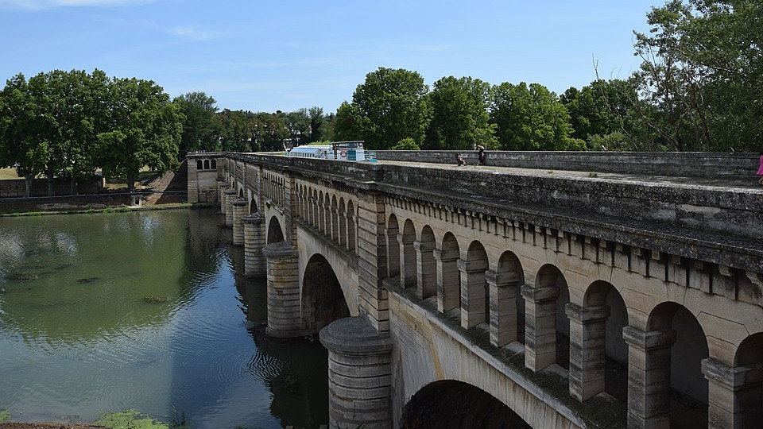
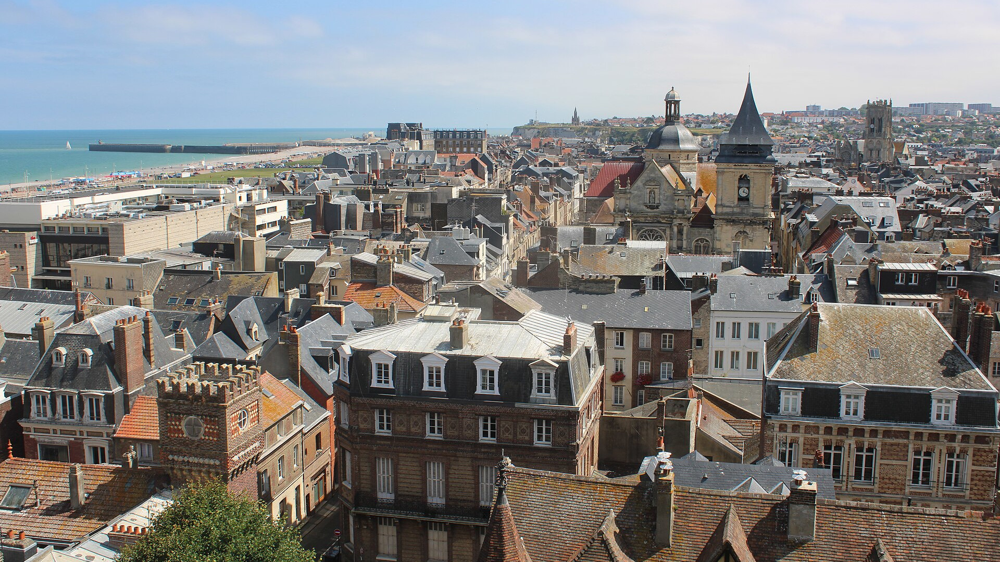
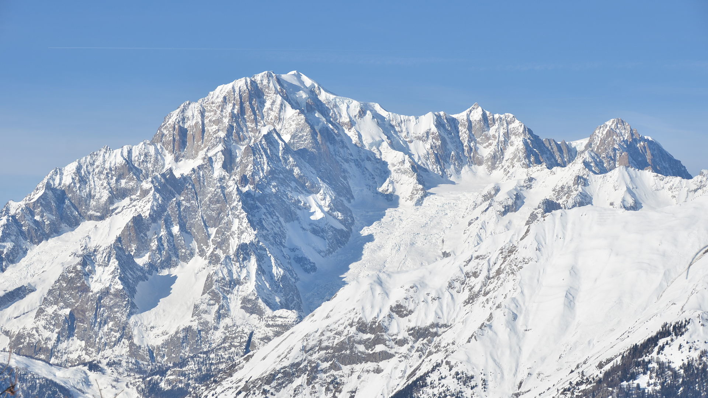

NOS ITINÉRAIRES
Découvrer notre sélection d'itinéraires bikepacking en France, et partez à l'aventure !
Le canal du Midi

Un itinéraire accessible, principalement plat, idél pour découvrir la région du Midi à vélo !
- Longueur : 197km
- Durée : 2 à 3 jours
Paris-Dieppe

Un itinéraire accessible, principalement plat, idél pour découvrir la région du Midi à vélo !
- Longueur : 394km
- Durée : 2 à 5 jours
Le tour du Mont Blanc

Un voyage en haute montagne au coeur des Alpes françaises et italiennes, pour les plus téméraires !
- Longueur : 350km
- Durée : 8 à 10 jours